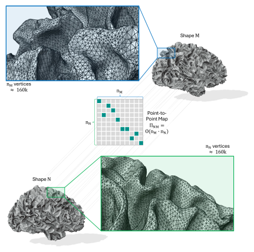
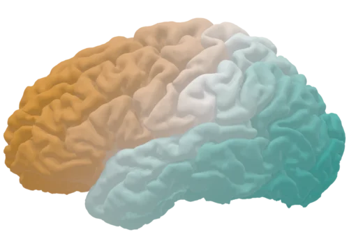
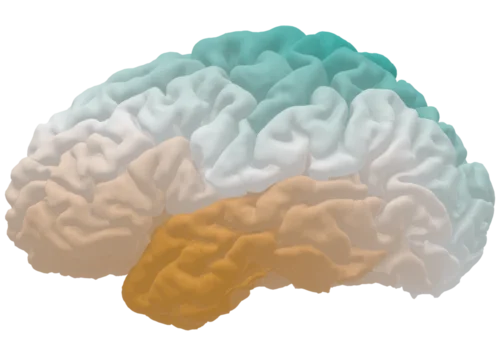
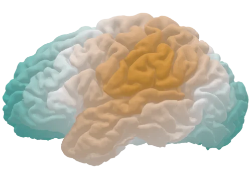
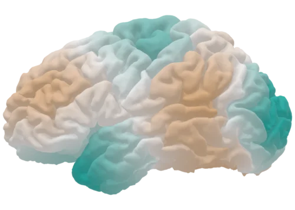
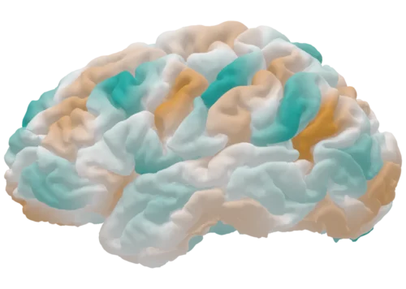
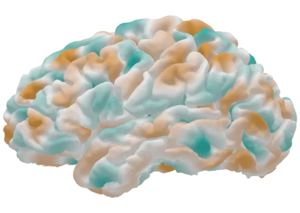
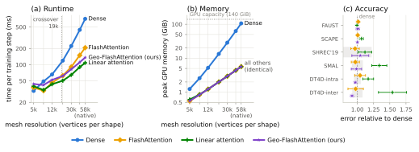
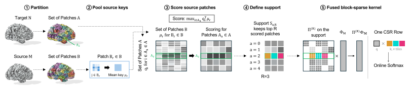

Spatial-Spectral Coupling as Attention Scaling Shape Correspondence to High-Resolution Surfaces
1 Technical University of Munich 2 Munich Center for Machine Learning 3 Imperial College London
Abstract
Establishing dense correspondence between high-resolution 3D shapes remains challenging due to the spatial-spectral coupling at the core of many functional-map methods, which grows quadratically with mesh resolution. We observe that this coupling is equivalent to a scaled dot-product attention formulation, with learned descriptors serving as queries and keys and spectral basis functions as values. This connection makes efficient attention implementations directly applicable to shape matching and an effective mechanism for scaling spatial-spectral coupling. We show that optimized quadratic attention implementations can scale modern deep functional map pipelines to large mesh sizes, improving both runtime and memory consumption, while sub-quadratic methods introduce errors, particularly for non-isometric shape pairs, where an exact coupling proves most necessary. These insights motivate Geo-FlashAttention, which restricts the exact softmax to geometry-selected surface patches and achieves near-linear empirical scaling while preserving correspondence accuracy of exact implementations. Across six standard benchmarks and three functional-map pipelines, rigorous analysis shows that efficient couplings preserve correspondence accuracy. At 60k vertices, these insights reduce peak training memory from 106.08 to 5.67 GiB, with Geo-FlashAttention being 1.5× faster per training step than FlashAttention. This enables end-to-end learning for correspondence problems on large meshes such as cortical surfaces, where high resolution is required to preserve disease-relevant intricacies of the surface geometry.
The bottleneck
The coupling grows with nM · nN
Spectral matching methods rely on a point-to-point map \Pi_{NM}. Comparing every vertex on one shape with every vertex on the other needs \mathcal{O}(n_M \cdot n_N) memory. For two cortical surfaces with ≈160k vertices each, the dense matrix has over 25 billion entries, creating a substantial training-memory bottleneck.

How it works
Spatial-spectral coupling is attention
Coupled functional-map methods only consume the product \Pi_{NM}\Phi_M. Written out, it is scaled dot-product attention, so efficient attention kernels apply directly.
learned descriptors of the target shape
learned descriptors of the source shape
Laplace-Beltrami eigenbasis, transported through the map






The values: columns of \Phi_M, eigenfunctions of the Laplace-Beltrami operator on the source cortex.
Results
Runtime and memory
One training step as mesh resolution grows, on a single H200 NVL (140 GB). Only the evaluation of \Pi\Phi changes.

| Coupling | ≈12k vertices | ≈60k vertices | ||
|---|---|---|---|---|
| Time (ms) | Peak mem. (GiB) | Time (ms) | Peak mem. (GiB) | |
| Dense (fp32) | 66.0 | 5.22 | 710.6 | 106.08 |
| FlashAttention (bf16) | 46.4 | 1.23 | 207.2 | 5.67 |
| Linear attention (ELU) approximate | 43.5 | 1.23 | 108.4 | 5.67 |
| Geo-FlashAttention ours | 52.3 | 1.23 | 136.2 | 5.67 |
Lower time and memory are better. Mean over five repeats on an H200 NVL. Measurements cover one training iteration. Linear attention is fastest but approximates the coupling and loses accuracy (panel c above); FlashAttention and Geo-FlashAttention achieve comparable observed correspondence accuracy across the tested benchmarks. Geo-FlashAttention approximates full coupling through selected support.
Geo-FlashAttention
We partition each surface into geodesic patches, score source patches using descriptors, and compute exact softmax within selected support. Restricting that support approximates the full coupling.

Citation
@misc{demeter2026spatialspectral,
title = {Spatial-Spectral Coupling as Attention:
Scaling Shape Correspondence to High-Resolution Surfaces},
author = {Demeter, Bence and Ehrenreich, Kilian and Kleber, Amelie and
Oprisiu, Ioana and Spohn, Philipp and Wachinger, Christian and
Bongratz, Fabian and Bastian, Lennart},
note = {Preprint},
year = {2026}
}